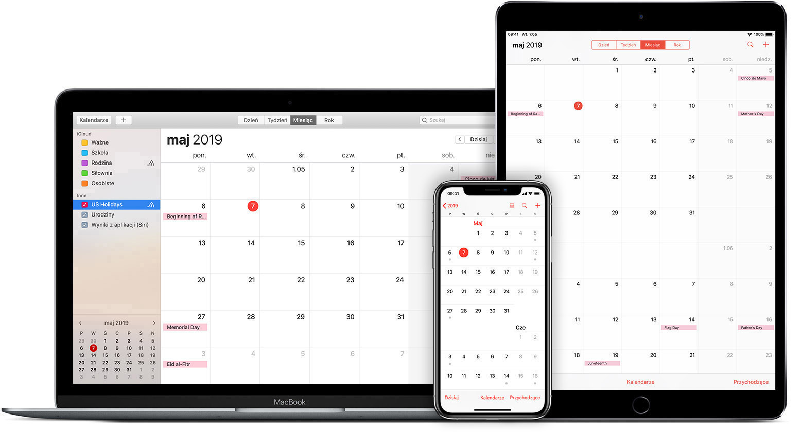

Wstęp
Aplikacjami mobilnymi nazywamy oprogramowanie działające na urządzeniach przenośnych jak np. smartphone czy tablet. Celem tworzenia takich aplikacji jest m.in. umożliwienie użytkownikom wykonanie codziennych czynności wymagających dostępu do komputera z internetem za pośrednictwem np. telefonu. Aplikacje mobilne były pierwotnie oferowane dla ogólnej produktywności i wyszukiwania informacji, wliczając pocztę elektroniczną, kalendarz, kontakty, rynek giełdowy i informacje o pogodzie. Jednak wymagania użytkowników i dostępność narzędzi programistycznych spowodowały szybką ekspansję do innych kategorii, takich jak te obsługiwane przez oprogramowanie komputerowe przeznaczone dla komputerów stacjonarnych.
Aplikacje mobilne zostały pierwotnie przeznaczone do zwiększanie produktywności. Pierwsze aplikacje pozwalały na dostęp do poczty e-mail, kalendarza lub kontaktów. Jednak powszechne zapotrzebowanie na aplikacje spowodowało ich gwałtowny rozwój w wielu dziedzinach.
Ponieważ ograniczenia techniczne urządzeń mobilnych są większe niż w przypadku komputerów, programiści aplikacji mobilnych mają przed sobą trudne zadanie. Aplikacje mobilne zazwyczaj pozostają prostsze w działaniu niż ich komputerowe odpowiedniki. Innym czynnikiem ograniczającym aplikacje mobilne jest znacząco mniejszy rozmiar ekranu telefonu czy tableta od rozmiaru monitora komputerowego